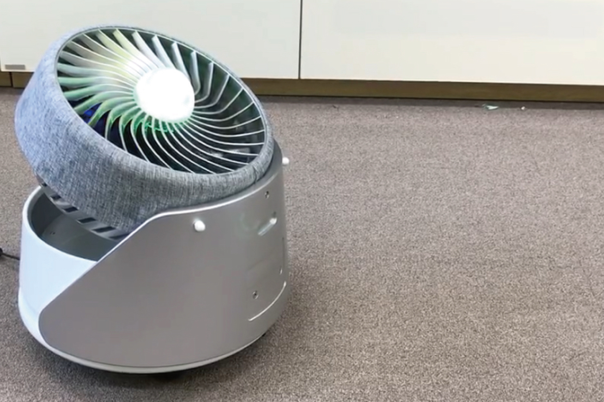
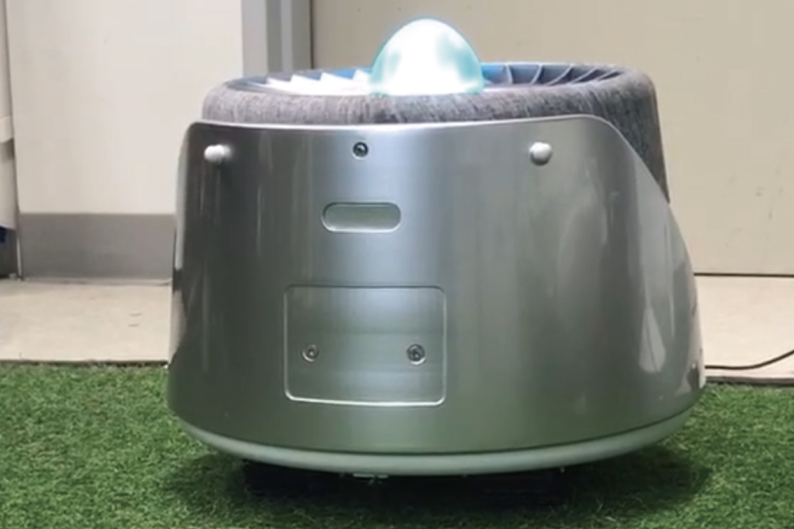
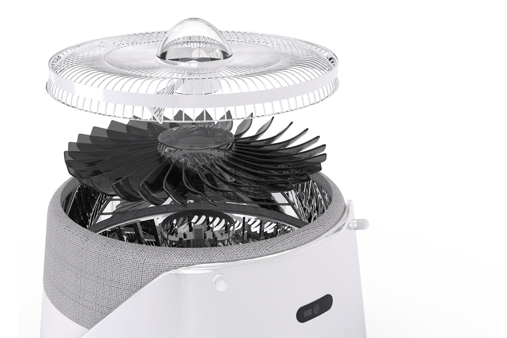
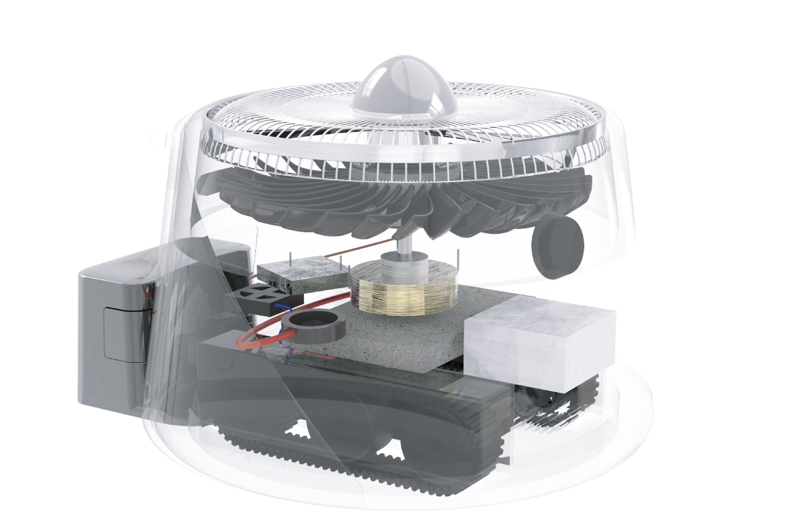
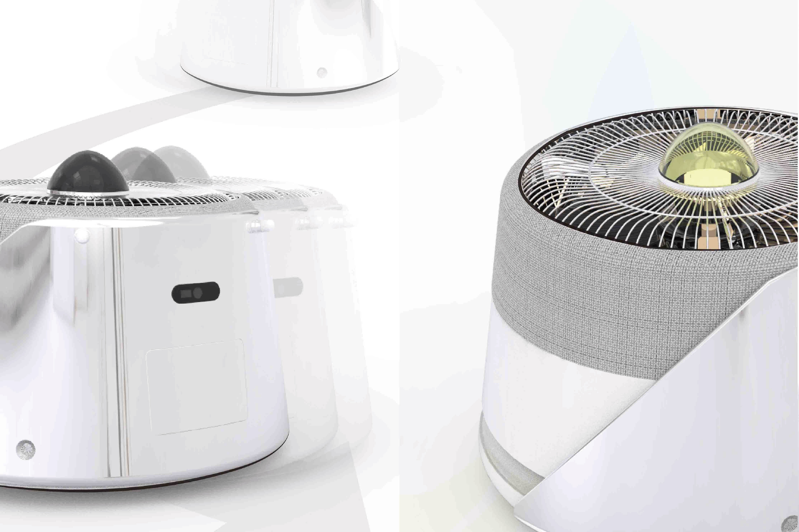
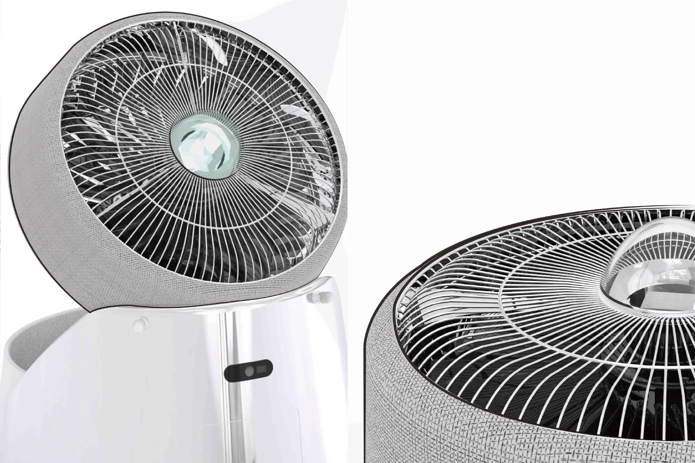

Air King
Compact air circulator/purifier optimized for small apartments and studios. Directed airflow geometry, low-noise fan architecture, and simple, glanceable UX.
≤ 28 dB
Low-noise night mode
Auto
Air quality sensing
360°
Oscillation / throw control
Overview
Air King balances throw distance and diffusion with a sculpted duct and stator design. It is a truly innovative air managing robot that contains automobility function for future house environment.
Details
Role
Product Design · UX
Core
Stator/impeller geometry · directional duct · PM sensor
Modes
Sleep / Work / Boost (auto)
Year
2024
Team
Appliance engineers · ID/UX
Gallery






← Back to Projects